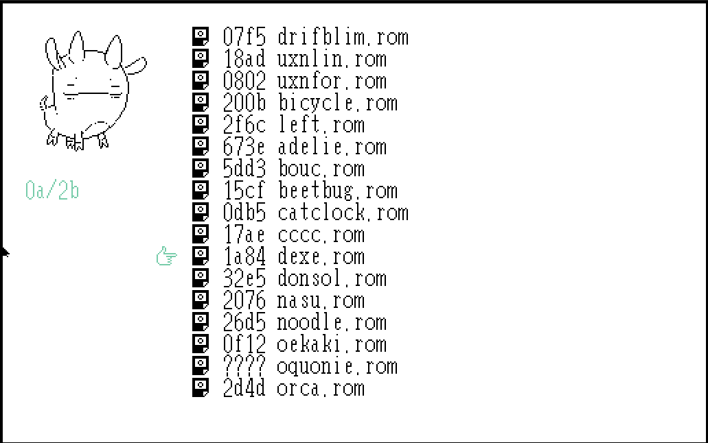
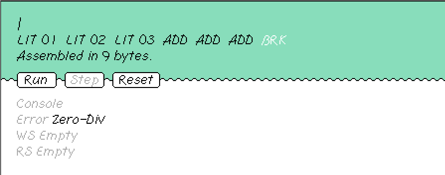

uxntal
workflow
for larger programs

- run
uxnemu launcher.rom - open
left.rom - create
.talfile: Ctrl+r to name file - Ctrl+s to save file
- F4 to close
leftand go back to launcher - Find
.talfile - Hit Enter or Ctrl to compile
- Go to
.tal.romfile - Hit Enter to run rom file (F4 to exit)
when you need a REPL for short code

- run
uxnemu bicycle.romor can be launched fromlauncher.rom - enter you code and hit enter
- click Step go through each operation and runtime state
- click Run go run everything at once
concepts
LIT (or #
): push into stack
LIT 01 LIT 02 LIT 03
or
#02 #03
stack (LIFO): [01 02 03] ->
LIT2 (or #
): push 2 bytes (short) into stack
LIT2 0001 LIT2 0002
or
01 #0002
stack: [00 01 00 02]
ADD: pop 2 values on top, add them and push result to stack
#02 #03 ADD
stack: [01 05]
#02 #03 ADD ADD
stack: [06]
#02 #03 ADD ADD ADD
error: underflow
this is because the last `ADD` takes 2 values off the stack but there will be only one value on the stack to pick at the end
ADD2: pop 2 shorts, add them and push result to stack (most signficant byte first)
01 #0203 ADD2 ADD
stack: [#0101 #0203] - ADD2 (0203+0101) [#03 #04] - ADD [#07]
INC: pop 1 value, add 1 and push result
This is basically X 01 ADD
where X
is the top of the stack.
INC
stack: [02]
DEO2: AKA device out. pop device address value and send next value (byte or short) to device with given address.
- fff #08 DEO2
this sets the all system color's red channels to the value f
or 15
.
uxn/varvara colors
the system can hold 4 colors each with a rgb channels. each rgb value has 16 possible hex values: 0-f
so the previous example results in:
r g b
color 0: f
color 1: f
color 2: f
color 3: f
DEI2: AKA device in. pop device address value and read value from device and push on stack
`Bits sent to ports are arguments to functions for those devices`external sources
- launcher.rom: media/uxn-launcher.png
- bicycle.rom: media/uxn-bicycle.png
- 2:
- all system color's: https://wiki.xxiivv.com/site/varvara.html
- 2: